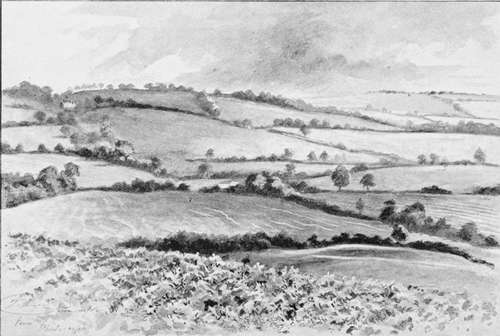

Chapter IX. The Horse
Description
This section is from the book "Hunting: A Manual of Fox, Hare, Stag & Otter Hunting", by J. Otho Paget. Also available from Amazon: Hunting: A Manual of Fox, Hare, Stag & Otter Hunting.
Chapter IX. The Horse
The pleasures of fox-hunting being largely dependent on the horse you ride, I think it will not be out of place here to discuss the animal and its peculiarities.
The country you intend to hunt in, your weight, your method of riding, and your pocket, have all to be considered in making a choice. So much depends on the man himself, that no hard and fast rule can be laid down. A horse will go perfectly with one man, that would be absolutely useless in the hands of another. I should advise the beginner who has the ways of life made easy by a well-filled purse, and who has only a superficial knowledge of horse-flesh, to put himself in the hands of some well-known dealer, but it should be distinctly understood that a horse is to be returned if not liked. Under these circumstances it is absurd for the neophyte to pit his knowledge against that of the man whose business it is to know everything about a horse. Let him go to the dealer and say, ' I want so many hunters to carry me safely and well over a certain country.' Ask him to fix a figure on each horse he shows you, and when he has put a price on about double the number you require, then proceed to make your selection. Ride each one in turn, gallop them downhill, and jump them over a few small fences. You may conclude that those which give you a pleasant feeling, which do not seem as if they were going to tumble on their heads when landing over the fences (and in fact leave the impression of a well-balanced rocking-chair), have good shoulders. Don't bother your head about splints, curbs, spavins, or any other defect you may read about, but insist on having good shoulders. Leave the question of the animal's capabilities and education as a hunter entirely to the honour of the dealer ; put your trust in the veterinary surgeon you employ to examine about all matters of soundness and age ; but decide for yourself what you like, and do not be persuaded to buy a horse that does not seem comfortable to ride. If you buy only horses with really good shoulders, you will never get any very bad falls. Dealers cannot afford to be particular about shoulders themselves, and they are rather inclined to wilfully shut their eyes to this defect when they are selling. Never hazard an opinion about whether shoulders look right or not, and never condemn them in words, but merely say you do not quite like the ' feel' of the horse, and pass on to the next. Do not enter into a discussion with a dealer about a horse's good or bad points, because you are nearly certain to be convinced against your own opinions, but pick out those you like, and buy them, if the dealer recommends them as good performers. A sensible head and a generous bold eye are points that the least ' horsey' of men can judge for themselves, and they are of no little importance in determining the animal's character.
A Bit of Leicestershire
The poor man, or the man of moderate means, will have to proceed with the purchasing of his horses in a different manner, but here it is very difficult to advise without knowing the exact price the man can give, and how bad a rider he is. A horse with four good sound legs, and a character of being a genuine performer, but a slight whistler, will enable the beginner to see some sport, and at the same time teach him how to ride. If he has a friend in whose judgment he has confidence, he should ask his advice about any horses that are going to be sold by auction, and with a little trouble he may get hold of decent animals at low prices. Remember that people send horses up to auction to sell them, and want to get as much money as they can, and beware of letting out to anybody except your one friend that you are a possible purchaser.
A horse that is up to fourteen stone, has plenty of quality, and is a good performer over a country, with the addition of manners, is worth from one hundred and fifty to three hundred pounds, but anything outside the range of that degree of excellence has no certain market value. The seller's idea of his horse's value is always higher than that of the buyer, and we must not blame the former for getting the best price he can. In the same way the buyer must give as little as possible, and he is not to be blamed for giving a much lower price than the owner thinks the animal is worth. With most other things there is a fixed value, and it would be dishonest to sell at a much higher or to buy at a much lower price.
A horse-dealing transaction is supposed to lead the most straightforward man from the path of honesty, but I do not see any reason for him being thus led astray. The man who gets the worst of a bargain is very liable to say or think he has been cheated, forgetting that he has used all his special knowledge to turn the balance in his favour, and has tried his utmost to get the better of the other party.
In my opinion, the ethics of horse-dealing are as plain as in any other business, and the only complication is when men try to deal without having any experience in the trade. There is hardly any man who has ever been astride of a horse who does not think himself a competent judge of the animal's good and bad points. This little conceit generally costs money before the man is fully aware of his own ignorance, and he is inclined to blame others for the result instead of himself. If it pleases and amuses you to enter into the arena with sharper wits than yourself, you must not cry out when you are worsted in the encounter. Use all your powers to buy at the lowest possible price and to sell at the highest, but do not misrepresent or state things that are untrue, and you will have nothing to reproach yourself with afterwards. If you say a horse is sound when you know him to be otherwise, you are cheating, and are little better than a pickpocket.
Different countries, as I have said, require a different stamp of horse, but I prefer a preponderance of the thoroughbred blood, whether the land be grass or plough. I think the well-bred ones take longer to learn their business than the others, but when once they take to jumping they are the pleasantest mounts, and are only cantering when the cock-tails are galloping.
Continue to: